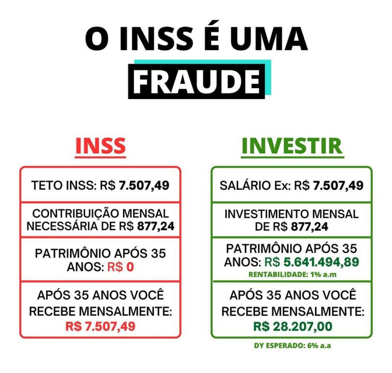
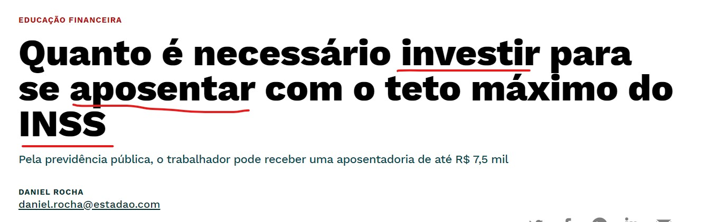
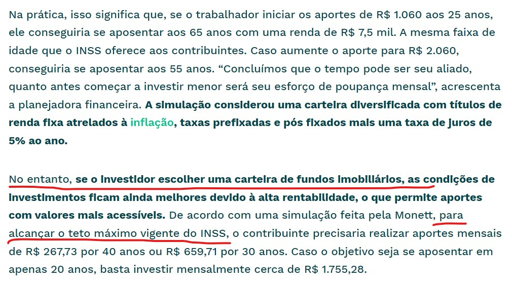

Em Lógica, “falácias” são argumentos que conduzem a conclusões falsas, por desrespeitarem as regras de boa formação argumentativa. Algumas são tão comuns que merecem nomes próprios, como os argumentos “ad ignoratiam”, “ad hominem”, “ad populum”, etc. Esse é um tema do qual gosto bastante e talvez seja objeto de uma postagem futura. Mas hoje quero tratar de uma falácia comum em Direito Previdenciário: a falácia da analogia imprópria.
Analogia é um termo bastante conhecido no Direito. O argumento analógico, ou a simili é aquele usado para justificar a aplicação de uma regra a um suposto fático que, a priori, não estava previsto em seu antecedente. Esse argumento tem a seguinte estrutura:
- Um suposto fático (F’) não está disciplinado por nenhuma norma explícita (ou seja, o direito contém lacunas)
- F’ guarda uma semelhança relevante/essencial com F.
- F está disciplinado por uma norma explícita que lhe atribui uma consequência jurídica (Se F, então G).
- Conclui-se construindo uma norma nova, ou máxima de decisão Se F’, então G.
Vamos a um exemplo hipotético trivial.
Argumento 1.
- A entrada de gatos em determinado ambiente (por exemplo, no transporte coletivo) não é regulada por nenhuma regra (existe uma lacuna no ordenamento jurídico sobre esse assunto).
- Existe uma regra no ordenamento jurídico que proíbe a entrada de cães no transporte coletivo.
- Os gatos são similares aos cães, pois ambos são animais irracionais.
- Logo, está proibida a entrada de gatos no transporte coletivo.
A parte mais controversa do argumento analógico é aquela que trata da similitude entre os dois supostos fáticos regulados: qual o critério para considerar cães e gatos similares? Neste ponto, é necessário recorrer à razão subjacente da regra (ratio legis). Alguns dirão: “Ora, em se tratando de transporte coletivo para humanos, não devem ser permitidos outros animais. Logo, o traço relevante a ser considerado é somente este e cães e gatos, para essa norma, são iguais”. Outros (amantes de gatos) dirão: “Não, o fato é o que os cães são potencialmente mais perigosos que os gatos e a norma tem por razão subjacente a preocupação com a segurança dos usuários do transporte coletivo. Por isso, cães e gatos são substancialmente diferentes nesse contexto.” De acordo com o traço distintivo adotado, a conclusão será oposta:
Argumento 2.
- A entrada de gatos no transporte coletivo não é regulada por nenhuma regra.
- Existe uma regra no ordemanento jurídico que proíbe a entrada de cães no transporte coletivo.
- Os gatos são diferentes dos cães em periculosidade.
- Logo, está permitida a entrada de gatos no transporte coletivo.
Do ponto de vista argumentativo, se eu fosse um amante de gatos, diria que o “argumento 1” baseia-se em uma analogia imprópria e, por isso, é um argumento falacioso, ou seja, mal formado.
O objetivo aqui não é dizer que existe uma resposta certa neste caso, pois eu mesmo recorreria a uma postura realista e perguntaria como essa regra está sendo efetivamente aplicada. Meu objetivo é apenas demonstrar como se controi um argumento analógico e como ele pode ser desconstruído argumentativamente.
E que raios isso tem a ver com Direito Previdenciário?
É que existe um argumento falacioso bastante comum quando se trata de regimes previdenciários.
Ao estudar o assunto, nós vimos que, no Brasil, há regimes básicos (obrigatórios) e outros complementares (facultativos). Grosso modo, os primeiros obedecem à lógica da solidariedade e fundam-se na repartição de um fundo comum, enquanto os últimos obedecem à lógica da capitalização e baseiam-se na constituição de reservas individuais. Os regimes básicos aproximam-se mais dos contratos de seguro enquanto os regimes complementares assemelham-se às diversas formas de investimento (CDB, títulos públicos, fundos, etc.).
Então, se o objetivo é comparar ambos os sistemas para efeito de constituição de reservas financeiras, a analogia é absolutamente imprópria. Primeiro, porque só os regimes complementares são opcionais e não existe possibilidade de escolha entre um regime básico e um complementar. Segundo, porque somente os regimes complementares podem ser comparados com investimentos. A falácia da falsa analogia é ainda mais evidente quando se compara um regime básico de previdência social (como o RGPS) a um investimento qualquer. Vejam:
 O quadro estúpido acima foi extraído de uma postagem do LinkedIn. Mas até mesmo matérias de grandes jornais utilizam a falsa analogia de regimes previdenciários (certamente com interesses comerciais):


Enfim, queridos, cuidado para não caírem em “gatos” argumentativos.
Para saber mais:
GUASTINI, Riccardo. Estudios sobre la interpretación jurídica. México: UNAM, 1999. Capítulo Terceiro.
WESTON, Anthony. A Construção do Argumento. São Paulo: WMF Martins Fontes, 2009.
Reuse
Citation
@online{mendonça2023,
author = {MENDONÇA, Igor},
title = {Falácias {Previdenciárias}},
date = {2023-08-19},
url = {https://jusmendonca.quarto.pub/previ_blog/posts/falacias/},
langid = {portuguese}
}